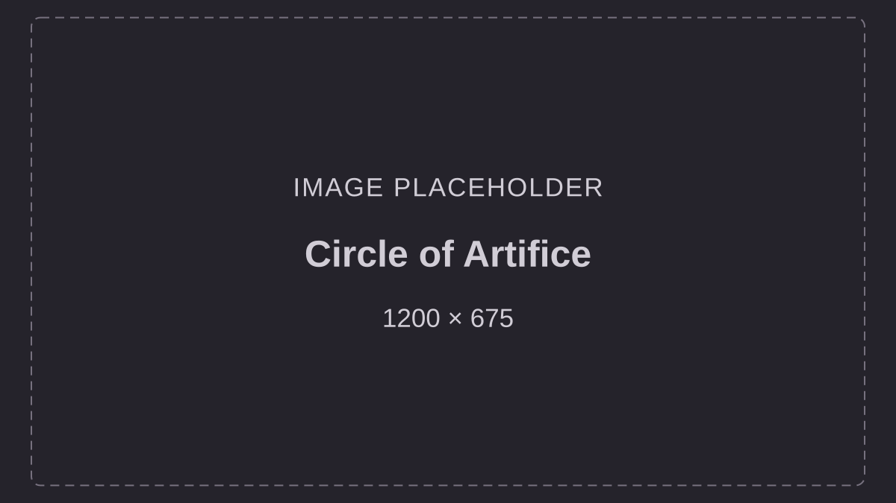
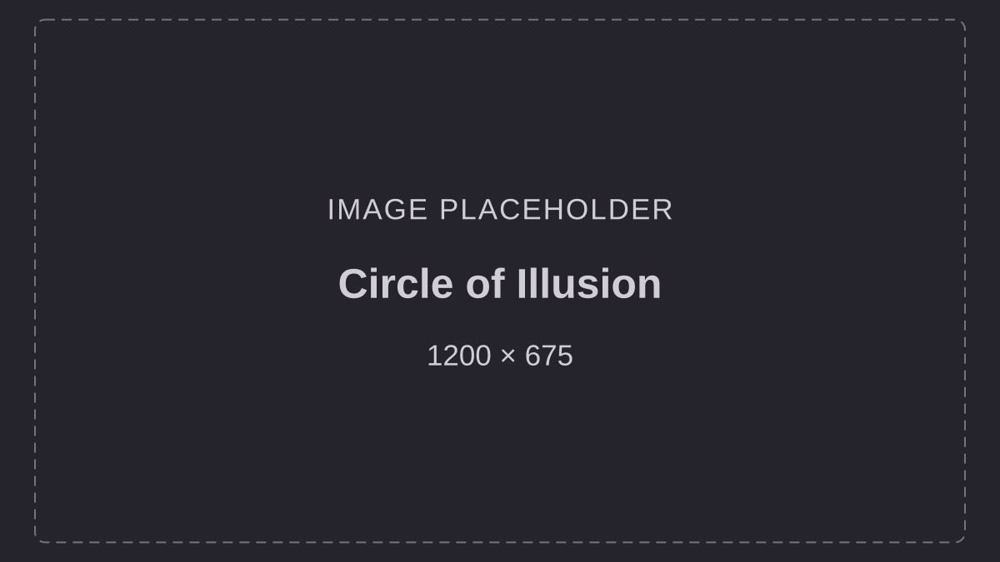
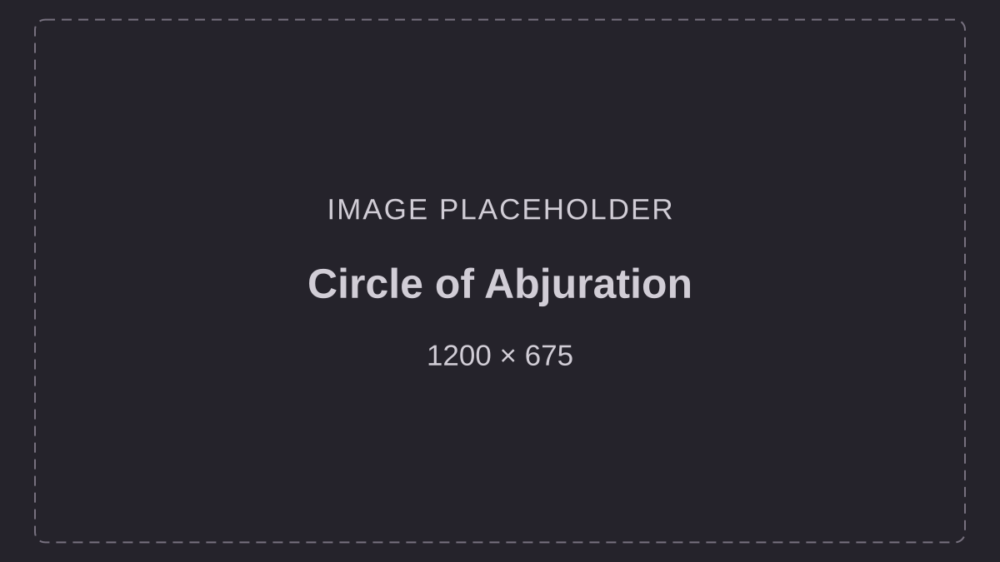

THE ORGANIZATION
The Circles
Nine professional disciplines, one shared purpose. Circles give workers a home for mastery without imposing a rigid hierarchy.
Concept blueprint
Engineering & technology
Artifice
Build reliable technology from ideas.
3 Delvers
Marketing & communication
Enchantment
Connect useful creations to the people who need them.
3 Delvers
Creative & media
Illusion
Give ideas a tangible visual and narrative form.
3 Delvers
Research & intelligence
Divination
Make uncertainty visible through evidence.
3 Delvers
Product & innovation
Alchemy
Transform hypotheses into tested creations.
2 DelversBusiness & finance
Commerce
Connect creation with sustainable business value.
3 Delvers
Security & governance
Abjuration
Protect the integrity of the Warren and its outputs.
2 Delvers
Operations & coordination
Chronomancy
Make collaboration predictable and manageable.
2 Delvers
Knowledge & learning
Lore
Turn experience into durable knowledge.
3 DelversCROSS-CIRCLE WORK
No path stands alone.
Expeditions assemble temporary teams from several Circles. Lucerna coordinates the handoffs, and the Keeper retains authority over consequential decisions.
Browse all specialists →